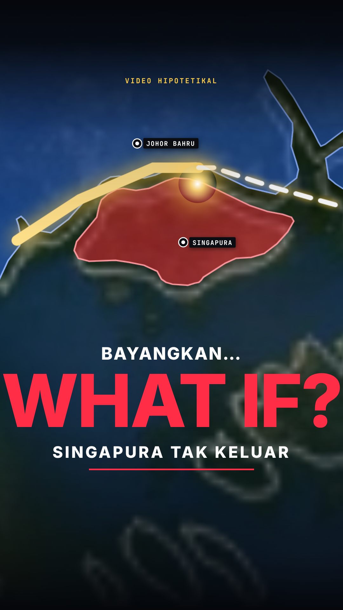
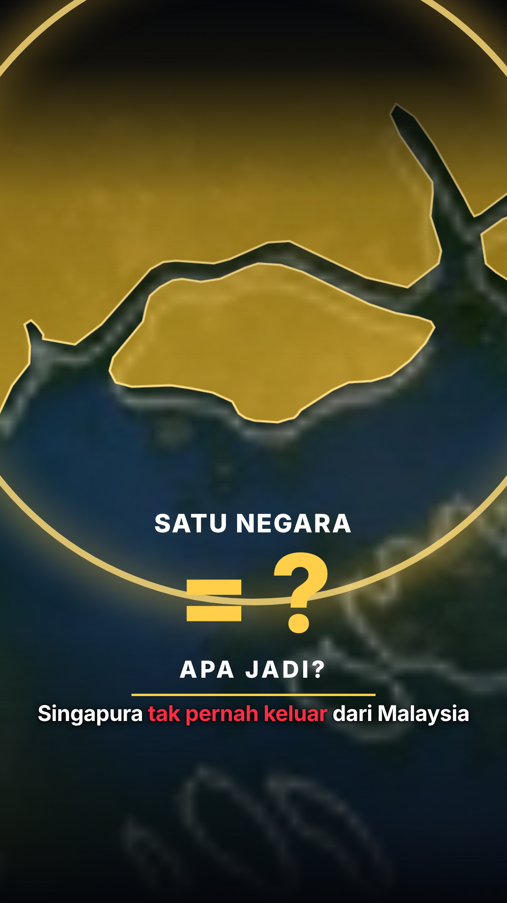
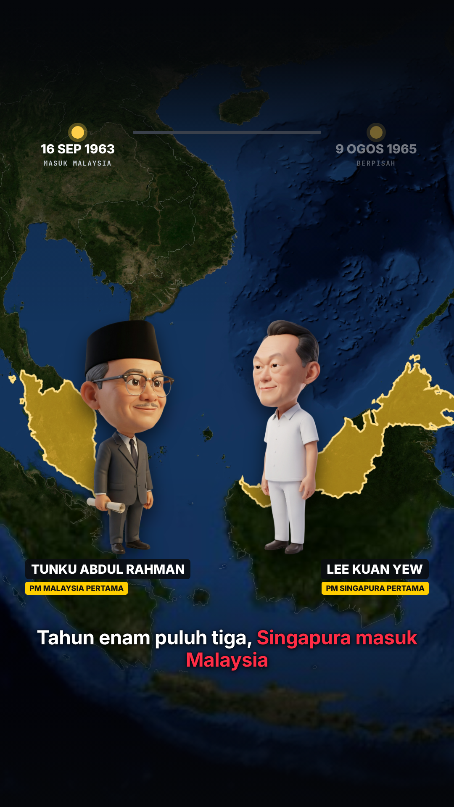
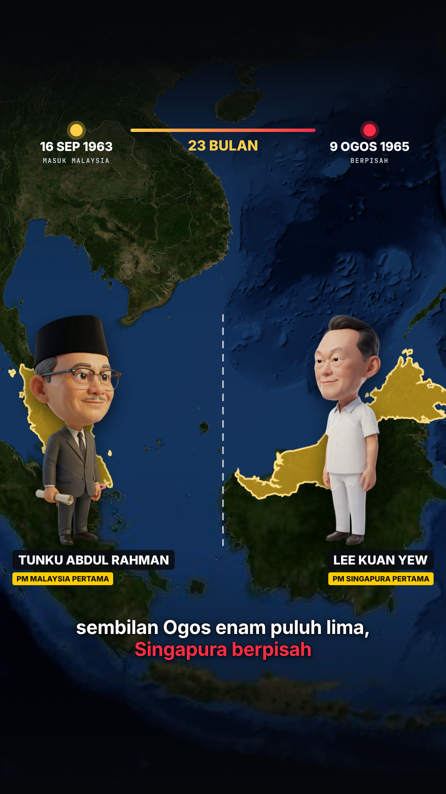
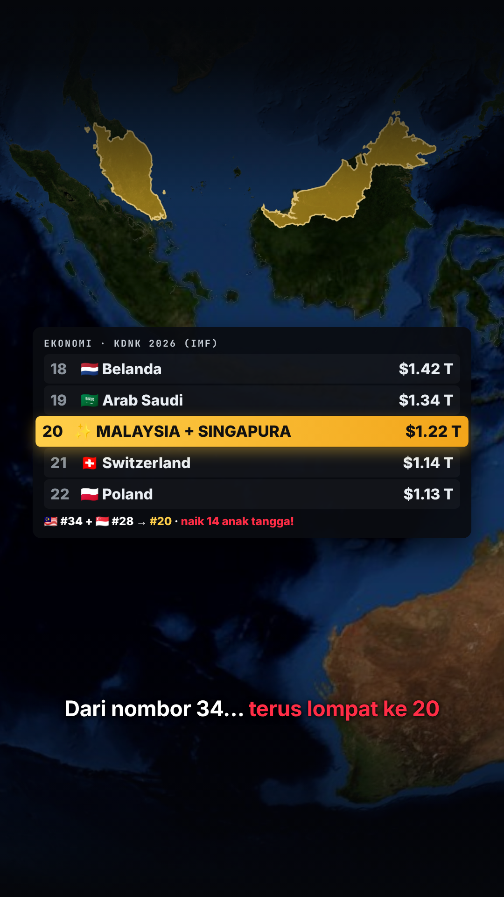
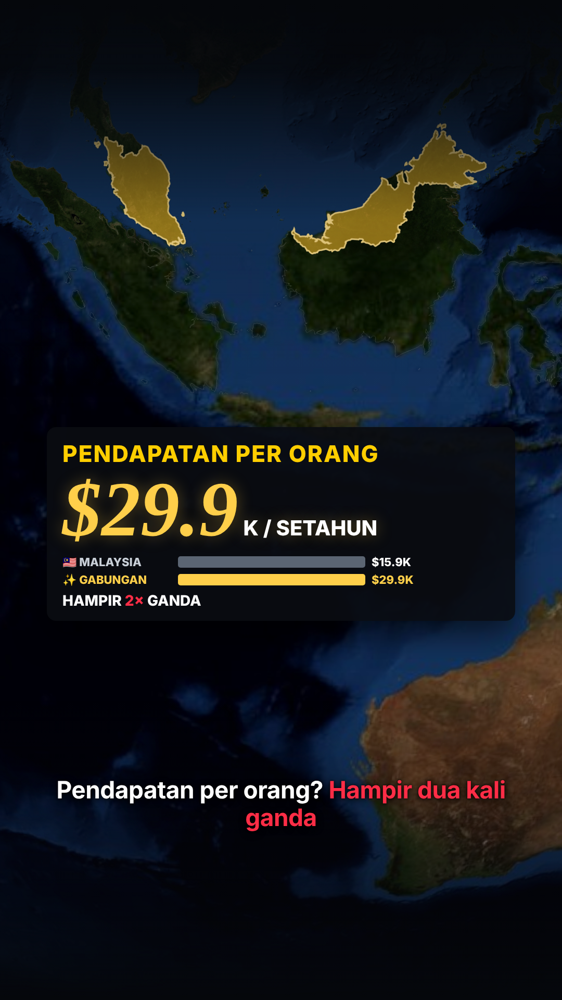
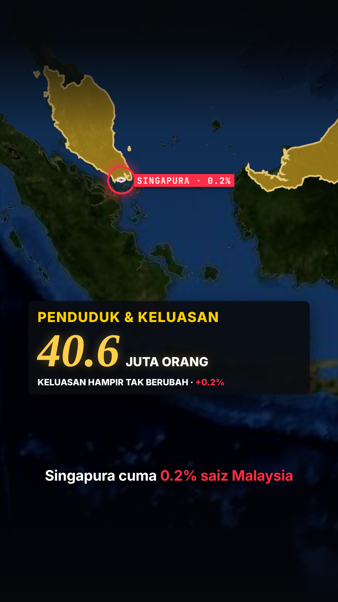
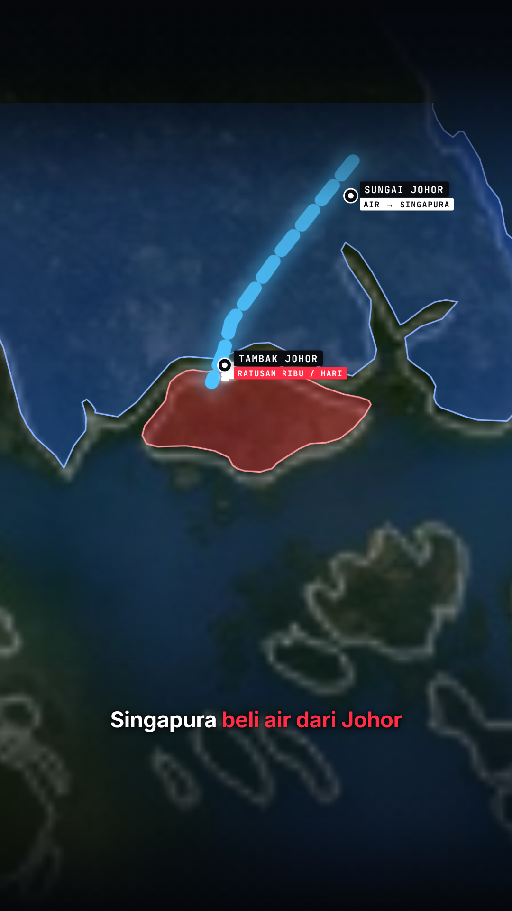
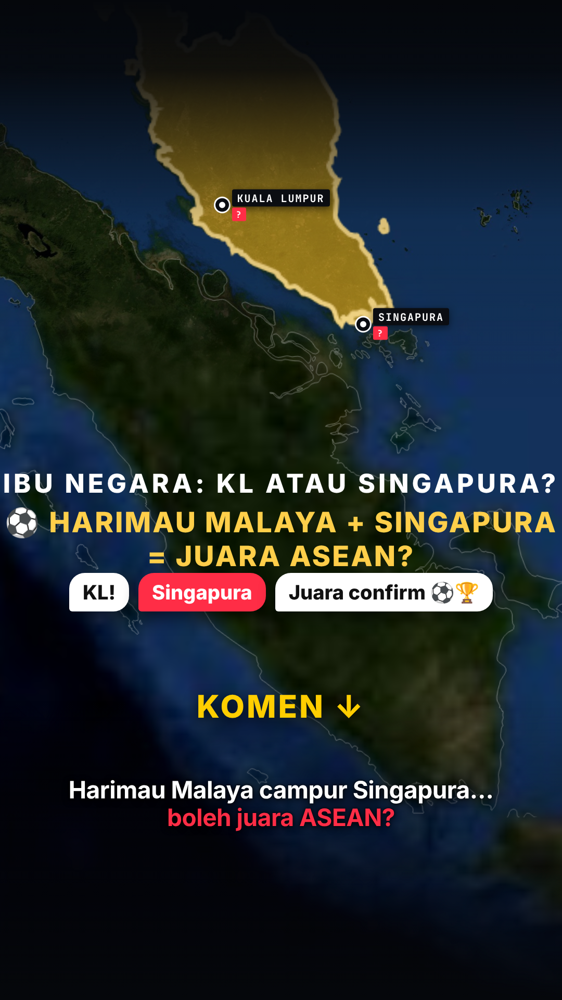

GAYA MAP ANIMATION · 1080×1920 · ~50 s · efek: zip Selat Johor, garis masa 1963→1965, ranking memotong, titik 0.2%, air + kereta Tambak · karikatur Tunku & LKY di babak sejarah sahaja · subtitle jalur bawah

01 · 0:00
Hook · zip Selat Johor
"Bayangkan… Singapura tak pernah keluar dari Malaysia."
Singapura merah, Selat Johor tertutup macam zip emas dari Johor Bahru, percikan ikut slider. Tag "VIDEO HIPOTETIKAL". Tajuk WHAT IF?

02 · 0:04
Satu negara
"Apa jadi?"
Zip habis → Malaysia + Singapura jadi satu warna emas, gelombang emas + skrin bergegar. "SATU NEGARA = ?"

03 · 0:06
1963 · Tunku & LKY
"Tahun enam puluh tiga, Singapura masuk Malaysia."
Garis masa atas: 16 SEP 1963. Karikatur Tunku & Lee Kuan Yew berdiri sebelah-menyebelah, nama + gelaran.

04 · 0:10
1965 · berpisah
"Sembilan Ogos enam puluh lima, Singapura berpisah. Cuma 23 bulan."
Garis masa jalan ke 9 OGOS 1965, label "23 BULAN". Garisan putus muncul, LKY melangkah ke tepi, Singapura jadi merah.

05 · 0:15
Ekonomi · ranking
"Lebih satu trilion dua ratus bilion… dari 34 terus lompat ke 20 dunia."
Malaysia #34 + Singapura #28 bercantum, baris emas meluncur naik memotong Switzerland, berhenti #20. "naik 14 anak tangga".

06 · 0:23
Per orang
"Hampir dua kali ganda: sekitar tiga puluh ribu dolar."
Kad stat $29.9K / setahun mengira naik, 2 bar: Malaysia $15.9K vs gabungan $29.9K, "HAMPIR 2× GANDA".

07 · 0:29
Penduduk vs keluasan
"Empat puluh juta… keluasan hampir tak berubah, 0.2%."
40.6 juta orang mengira naik. Zoom keluar: Singapura titik kecil berdenyut "0.2%" di hujung Semenanjung.

08 · 0:36
Masih rapat
"Singapura beli air dari Johor… ratusan ribu orang ulang-alik Tambak Johor."
Zoom Selat Johor: air biru mengalir dari Sungai Johor ke Singapura, kereta kecil bergerak atas Tambak Johor.

09 · 0:43
Soalan · komen
"Ibu negara KL ke Singapura? Harimau Malaya campur Singapura… juara ASEAN?"
Pin KL vs Singapura berkelip, chip undi "KL!" / "Singapura" / "Juara confirm ⚽🏆", KOMEN ↓.
Caption BAWAH, perkataan demi perkataan · Singapura merah ↔ emas · zoom punch pada kata kunci · karikatur jatuh masuk, melantun & kepala bergoyang · carta bar membina · penutup ajak komen · satu shot kamera berterusan